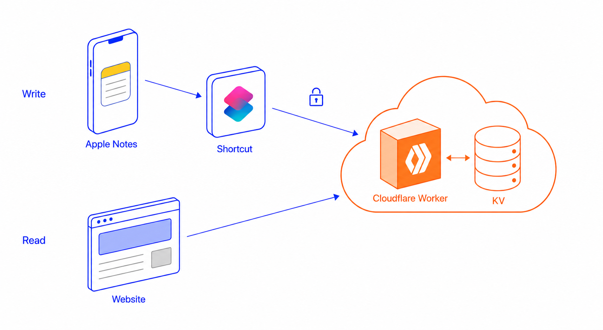

About Me
Sravan Bagalkote
I’m Sravan, with a Computer Science background and 12 years of experience in the software industry. I enjoy building useful things from early ideas and shaping rough thoughts into something clear and practical. Over the years, I’ve worked with different teams, products, and business needs, which has helped me understand both people and systems better. Outside work, I enjoy fitness, learning, and exploring personal projects. This website is a small space where I share what I’m building, learning, and thinking about.

Education
Primary School
1996 - 2004
Little Angels, Surat and St Thomas High School, Hyderabad
High School
2004 - 2007
Sanskar Vidya Bhavan, Bharuch
Intermediate
2007 - 2009
Narayana IIT Academy, Hyderabad
College
2009 - 2013
IIIT Hyderabad
Work
Arcesium
Principal Engineer
6 Years
Building an agentic workflow framework that would help teams to automate internal business processes.
Built backend systems for a low-code/no-code data platform, including a query engine; drove adoption across 25–30 enterprise clients.
Built and scaled a high-performance PnL accounting engine for back-office systems; implemented core changes that increased supported data volume 10× while reducing infrastructure cost ~2×.
Quince
Senior Software Engineer
1.5 Years
Early engineer (#3) who helped build and launch the first version of the e-commerce product in ~1 month, owning key architecture decisions end-to-end.
Built major parts of the second-generation storefront that continues to power the live site.
Built an internal portal for product and inventory tracking, improving operational speed and visibility for business teams.
Contributed to early growth by shipping fast and reliably, supporting the business to reach $1M+ annual sales.
Arcesium
Technical Lead
5 Years
Primary owner of a core operational UI platform used daily by ~200 analysts and managers across 4–5 reconciler ops teams, improving efficiency in day-to-day reconciliation workflows.
Built the supporting API layer and a thin backend for reconciliation statistics to power dashboards and operational reporting.
Innopark
Associate Software Engineer
0.5 Years
Built a user validation system for user registrations in a games portal
Others
Crossfit
Strength Stats
Fetching latest values from the journal.

Projects
Projects
Syncing my thoughts
I have a habit of writing notes in Apple Notes: thoughtful lines from podcasts, movies and my own little observations. I wanted to write my thoughts at the same place, but also publish it on the internet (for my own happiness).
So, I setup it up in the following way. An Apple Shortcut reads the note that contains my thoughts, extracts the text, and sends it as a text/plain request to a Cloudflare Worker endpoint. The Worker authenticates, splits the entire note into separate thought blocks and writes the published JSON into Cloudflare KV. The JSON is available to the internet thereafter. The trigger is whenever I edit that particular notes.

The live result is visible in Thoughts. I used the same pattern for my Crossfit journal too: the details are different, but the idea is the same, letting a phone note become structured data on the internet.
Thoughts
Fetching latest notes.